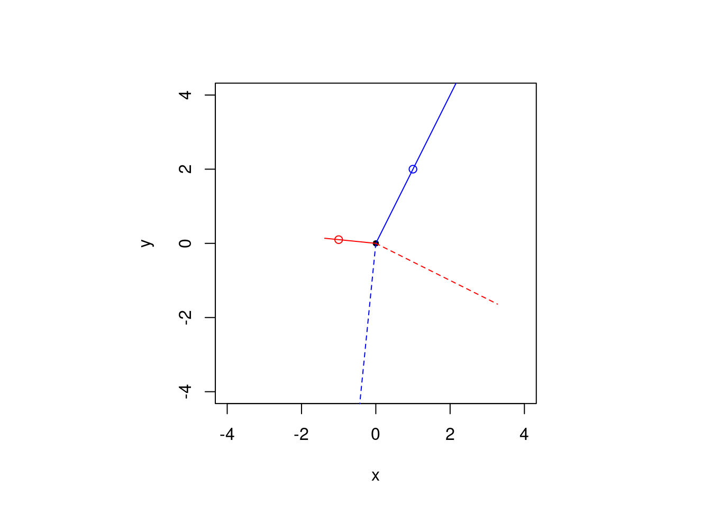

1.3 Week 1 exercises
(1.4) Oblique projections
Suppose that \(\dim(\mathsf{span}(\mathbf{X})) \neq \dim(\mathsf{span}(\mathbf{W}))\). An oblique projection matrix is of the form \(\mathbf{P}\equiv\mathbf{X}(\mathbf{W}^\top\mathbf{X})^{-1}\mathbf{W}^\top\) and appears in instrumental variable regression. The oblique projection is such that \(\mathrm{im}(\mathbf{P})=\mathsf{span}(\mathbf{X})\), but \(\mathrm{im}(\mathbf{I}-\mathbf{P})=\mathsf{span}(\mathbf{W}^\perp)\). This fact is illustrated below.
We consider two non-parallel vectors in \(\mathbb{R}^2\), \(\mathbf{X}\) and \(\mathbf{W}\). The figure shows the projection of a third vector (non-parallel to \(\mathbf{X}\) or \(\mathbf{W}\)) onto the span of \(\mathbf{P}\) (blue), \(\mathbf{P}^\top\) (red), \(\mathbf{I}_2-\mathbf{P}\) (dashed blue) and \(\mathbf{I}_2-\mathbf{P}^\top\) (dashed red). The circles indicate the points \(\mathbf{W}\) (red) and \(\mathbf{X}\) (blue) on the plane. Notice that \(\mathbf{I}_2-\mathbf{P}^\top \perp \mathbf{P}\), whereas \(\mathbf{I}_2-\mathbf{P} \perp \mathbf{P}^\top\).
#Create two vectors (non-parallel)
x <- c(1, 2)
w <- c(-1, 0.1)
#Create oblique projection matrix
P <- x %*% solve(t(w) %*% x) %*% t(w)
isTRUE(all.equal((P %*% P), P)) #P is idempotent## [1] TRUEP - t(P) #but not symmetric## [,1] [,2]
## [1,] 0.000 -2.625
## [2,] 2.625 0.000#Project a third vector `vec' onto P, P transpose, I-P, I-(P transpose)
vec <- c(1.9, -1.5)
vec_P <- P %*% vec
vec_Pt <- t(P) %*% vec
vec_Id_minus_P <- (diag(2)-P) %*% vec
#diag: diagonal matrix, default to identity
vec_Id_minus_Pt <- (diag(2)-t(P)) %*% vec
#Plot the resulting vector along with the two vectors x and w (points)
par(pty = "s") #graphical console parameters (square region)
plot(NULL, xlab = "x", ylab = "y", xlim = c(-4, 4), ylim = c(-4, 4))
#create empty plot with labels x and y, on square region [-4,4]^2
points(0, 0, pch = 20) #points: add points to existing plot
points(x[1], x[2], col = "blue")
points(w[1], w[2], col = "red")
# blue line for P, dashed blue for I-P, red for Pt, red dashed for I-Pt
segments(x0 = 0, y0 = 0, x1 = vec_P[1], y1 = vec_P[2], col = "blue")
segments(x0 = 0, y0 = 0, x1 = vec_Pt[1], y1 = vec_Pt[2], col = "red")
segments(x0 = 0, y0 = 0, x1 = vec_Id_minus_P[1], y1 = vec_Id_minus_P[2], col = "blue", lty = 2)
segments(x0 = 0, y0 = 0, x1 = vec_Id_minus_Pt[1], y1 = vec_Id_minus_Pt[2], col = "red", lty = 2)